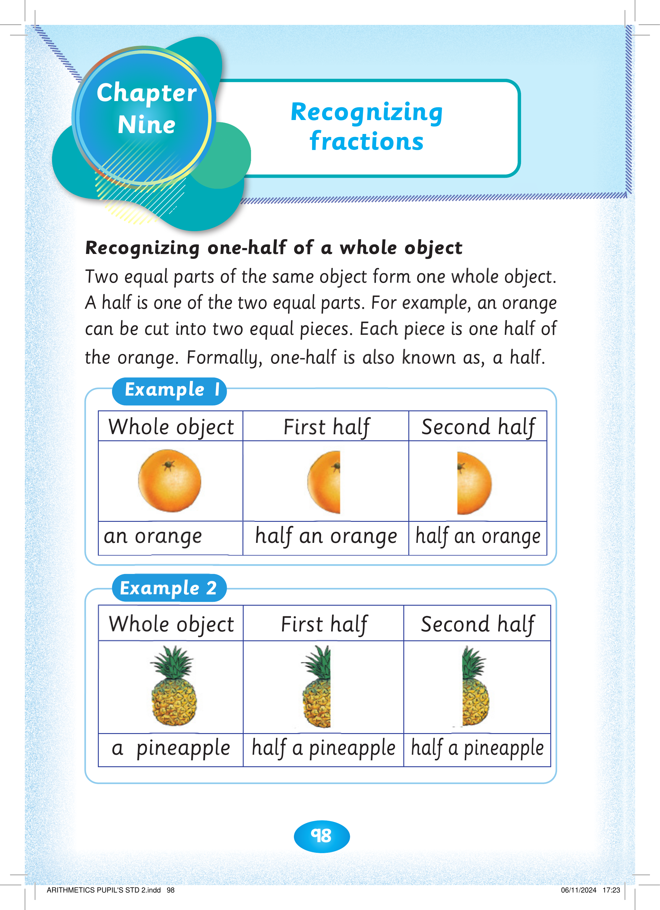
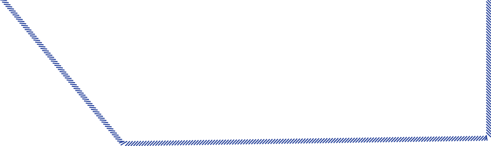
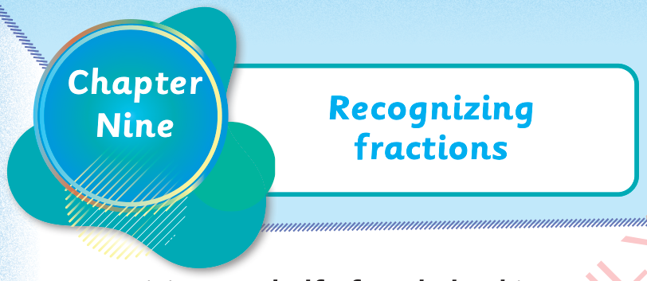

98
Chapter Nine. Recognizing fractions. Recognizing one-half of a whole object. Two equal parts of the same object form one whole object. A half is one of the two equal parts. For example, an orange can be cut into two equal pieces. Each piece is one-half of the orange. Formally, one-half is also known as a half.
Two equal parts of the same object form one whole object.
A half is one of the two equal parts. For example, an orange
can be cut into two equal pieces. Each piece is one half of the orange. Formally, one-half is also known as, a half.
Example 1. A whole orange is divided into a first half and a second half. Each part is half an orange. Example 2. A whole pineapple is divided into a first half and a second half. Each part is half a pineapple.
Whole object
First half
Second half
an orange
half an orange
half an orange


Recognizing fractions


Chapter
Nine
Example 2
Whole object
First half
Second half
a pineapple
half a pineapple half a pineapple


ARITHMETICS PUPIL'S STD 2.indd 98
06/11/2024 17:23